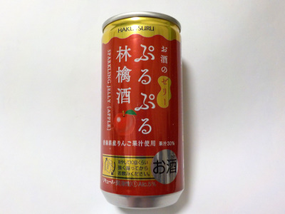

白鶴酒造のぷるぷる林檎酒。
2023/01/29

果汁が30%も入っているので、フルーティーでとっても甘くて美味しいです。
そのうえゼリーで炭酸もあってスイーツみたいです。
お酒感はほとんどないですが、アルコールが5%あるので飲んだ後に5%分のアルコールを感じました。
兵庫県神戸市東灘区住吉南町4丁目5-5
2023/01/29

果汁が30%も入っているので、フルーティーでとっても甘くて美味しいです。
そのうえゼリーで炭酸もあってスイーツみたいです。
お酒感はほとんどないですが、アルコールが5%あるので飲んだ後に5%分のアルコールを感じました。